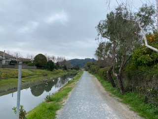

I recently did the hobby site, where I talked about running, and as well paths and trails to take, and mentioned some famous ones. I have designed sites working with Wordpress, Drupal, and other free open source materials. I have worked on sites with Word Press, Drupal and so on other open source platforms where give you the the tools to build a site, frames, themes of colors, they give you an option to do it in HTML editor and as well CSS. But the thing is it's also very limiting. I have taken this coding course that gives me the basics of front-end, it lasts eight weeks, with the eight weeks I have recently done projects like a site about running/exercise and that gives a discription of trails to run on. Another project I created prior to this class was a glutenfree page.
